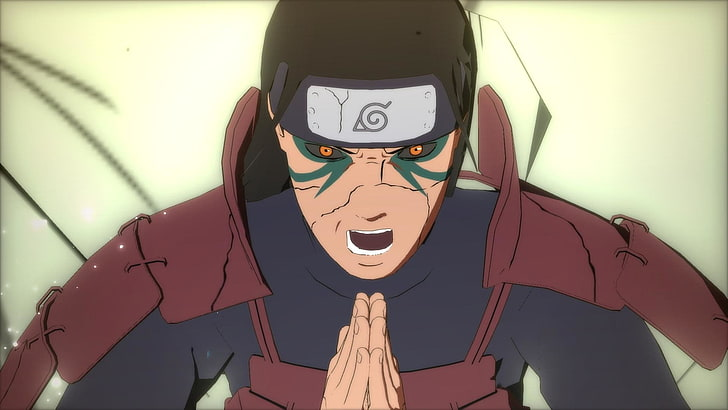
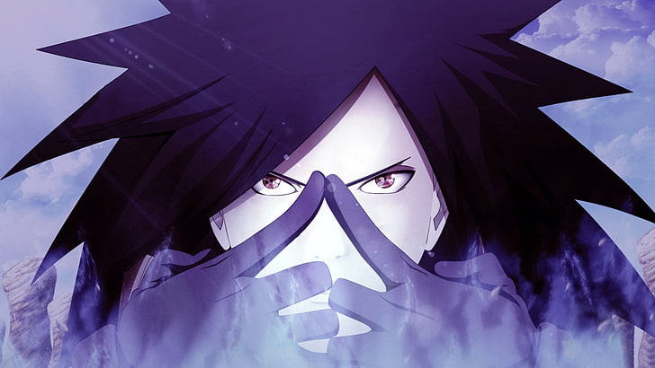
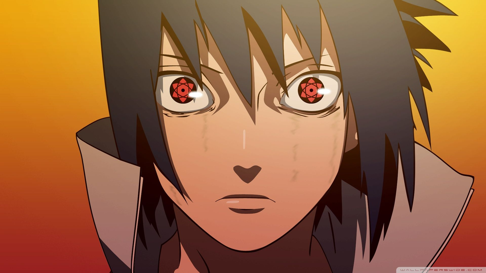
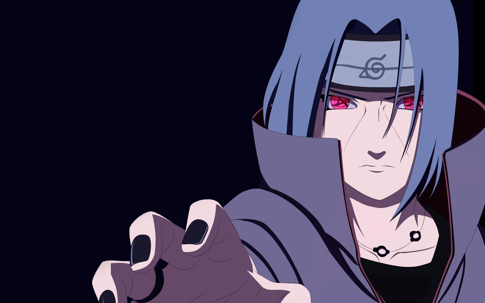
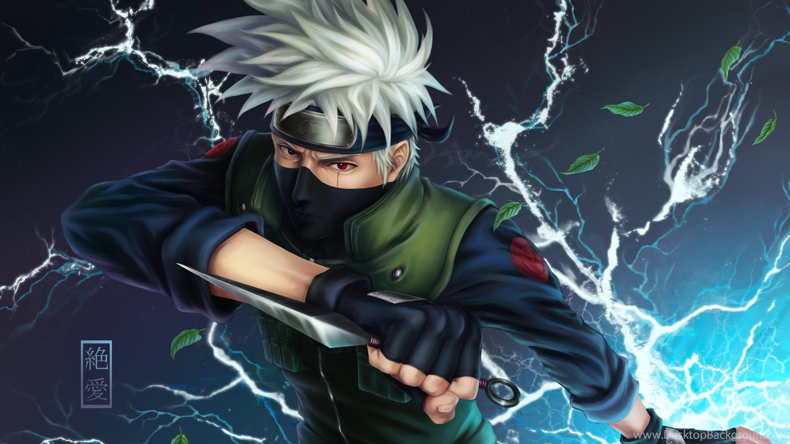

THE GOD OF SHINOBI
Hashirama Senju (千手柱間, Senju Hashirama) was a member of the famed Senju clan. He himself was hailed as the "God of Shinobi" for his unmatched ninja prowess. Hashirama sought peace for the shinobi world, and to that end founded Konohagakure with his clan, his childhood friend and rival: Madara Uchiha and the Uchiha clan. He would later become the First Hokage (初代火影, Shodai Hokage, literally meaning: First or Founding Fire Shadow) of Konohagakure. Although he was not able to achieve peace during his lifetime, his legacy and vision for the world would continue to shape the village and the entire shinobi world even after his death.
Hashirama was an excitable man with a boisterous personality. He loved meeting new people, having friendly competitions, and gambling. Headstrong and often impulsive, it fell to others – such as his brother, Tobirama – to be more responsible or realistic about things that Hashirama had gotten carried away with. When taken down in this way, or even when simply presented with information that troubled him, Hashirama could do a near-immediate about-face, going from laughing to sulking. These moping periods were typically brief though, and he'd quickly go back to his usual high-spirited nature. Later generations upon meeting him, tended to remark that neither extremes of his personality were very fitting for a man called the "God of Shinobi".[
Despite the first impression he may give, Hashirama was capable of being serious when it came to matters that were important to him. He spent years opposing the practice of sending children to war and dreamed of a shinobi system where a child could be around others his or her age, never needing to "grow up" prematurely on the battlefield. To that end he became very devoted to Konoha upon its foundation, as it was the realisation of his dream for peaceful childhoods. He wanted the rest of the village to cherish what Konoha represented just as much as he did, encouraging them to regard every villager as part of one large family that should always look out for each other. As Hokage, his job was to protect that family at all costs, even if that cost was his life. This philosophy, known as the "Will of Fire", would become a cornerstone of Konoha teachings for decades after his death.
THE GHOST OF UCHIHA
Madara Uchiha (うちはマダラ, Uchiha Madara) was the legendary leader of the Uchiha clan. He founded Konohagakure alongside his childhood friend and rival, Hashirama Senju, with the intention of beginning an era of peace. When the two couldn't agree on how to achieve that peace, they fought for control of the village, a conflict which ended in Madara's death. Madara, however, rewrote his death and went into hiding to work on his own plans. Unable to complete it in his natural life, he entrusted his knowledge and plans to Obito Uchiha shortly before his actual death. Years later, Madara would be revived, only to see his plans foiled and ultimately, and finally, realising the error of his ways and making amends with Hashirama before his final death.
Madara was born during the Warring States Period, and was the eldest of Tajima Uchiha's five children. Madara and his siblings grew up on the battlefield waging constant war with the Uchiha's rivals: the Senju. Three of his siblings died young, leaving Madara with only his younger brother, Izuna. Madara and Izuna became very close through their shared loss and constantly competed with each other to get stronger. This, combined with his naturally strong chakra, enabled the young Madara to defeat adult Senju in battle and develop a reputation as a genius.
During his infrequent downtime, Madara met a boy his own age named Hashirama. The two quickly developed a friendly rivalry, be it skipping stones or urinating in rivers. Like Madara, Hashirama was also a shinobi who had lost his brothers on the battlefield. Together they imagined a world where children like themselves wouldn't need to fight. As a precaution, Madara and Hashirama did not divulge their family names, but nevertheless discovered each other's identities: Madara was an Uchiha, Hashirama was a Senju; it was their duty to kill each other, even if they were friends. Needing to choose between his family and his dreams of peace, Madara chose to end his friendship with Hashirama so he would have no reservations over killing him in the future, a resolve strong enough to awaken his Sharingan.
THE CHILD PROPHECY /
NO. 1 UNPREDICTABLE NINJA
Naruto Uzumaki (うずまきナルト, Uzumaki Naruto) is a shinobi of Konohagakure's Uzumaki clan. He became the jinchūriki of the Nine-Tails on the day of his birth — a fate that caused him to be shunned by most of Konoha throughout his childhood. After joining Team Kakashi, Naruto worked hard to gain the village's acknowledgement all the while chasing his dream to become Hokage. In the following years, through many hardships and ordeals, he became a capable ninja, regarded as a hero both by the villagers, and soon after, the rest of the world, becoming known as the Hero of the Hidden Leaf (木ノ葉隠れの英雄, Konohagakure no Eiyū, literally meaning: Hero of the Hidden Tree Leaves). He soon proved to be one of the main factors in winning the Fourth Shinobi World War, leading him to achieve his dream and become the village's Seventh Hokage (七代目火影, Nanadaime Hokage, literally meaning: Seventh Fire Shadow).

Naruto is noted as boisterous, exuberant, and unorthodox, quite similar to Hashirama Senju. He inherited his mother's verbal tic, as he ends his sentences with "Dattebayo!" (だってばよ!) when emotional. Though he responds best to competition and is not afraid to ask for assistance, Naruto is relatively naïve and slow to understand principles or situations. He often requires an oversimplified analogy in order to grasp explanations and can even prove forgetful. Naruto is aware of his faults and admits he acts strong to mask his embarrassment and frustration about them. Despite his naivety, Naruto can be quite observant, picking up on things others miss and retaining information casually gathered through conversation.
While headstrong and often acting without thinking, Naruto's years as a prankster had given him a cunning imagination that was useful in split-second decision making, which has repeatedly proved invaluable in battle. He is a remarkable tactile learner, able to learn better through executing a task rather than understanding the theory of it. Once seen in action, even the likes of the Second Hokage revise their thoughts about Naruto's intellect and instinct in battle. After meeting Hagoromo, Naruto gained the innate ability to grasp the nature of chakra and comprehend all universal things, allowing him to quickly master the new powers he received. By adulthood he had become a capable teacher, instructing students at Konoha's Ninja Academy. During his fight with Delta, Naruto showed his ability to think ahead by hiding his power and faking defeat in order to make Delta drop her guard and reveal her plans, although Delta was perceptive enough to see through his attempts. Naruto ultimately was able to find out the weakness of Delta's Shinobi-Ware absorbing eye and overtax it after seeing it in action repeatedly. Naruto's most famous mental skill is to deceive his opponents, as he made effective use of even the most simple techniques to trick the deadliest of opponents. He could formulate multi-step plans or backup plans in the thick of battle, and act quickly even when given new information. He can also seemingly make himself predictable by creating a pattern, only to throw off his opponent by breaking it. He has even thrown in what others would call completely useless techniques at powerful opponents to create an opening for a counterattack. Naruto is rather observant, able to notice details others may overlook and subsequently take advantage of them to overcome his opponents. As an adult, Naruto proved to be a capable teacher in ninjutsu, quickly teaching the basics to Kawaki.
THE LAST UCHIHA
Sasuke Uchiha (うちはサスケ, Uchiha Sasuke) is one of the last surviving members of Konohagakure's Uchiha clan. After his older brother, Itachi, slaughtered their clan, Sasuke made it his mission in life to avenge them by killing Itachi. He is added to Team 7 upon becoming a ninja and, through competition with his rival and best friend, Naruto Uzumaki, Sasuke starts developing his skills. Dissatisfied with his progress, he defects from Konoha so that he can acquire the strength needed to exact his revenge. His years of seeking vengeance and his actions that followed become increasingly demanding, irrational and isolates him from others, leading him to be branded as an international criminal. After learning the truth of his brother's sacrifice, later proving instrumental in ending the Fourth Shinobi World War, and being happily redeemed by Naruto, Sasuke decides to return to Konoha and dedicate his life to help protect the village and its inhabitants, becoming referred to as the "Supporting Kage" (支う影, Sasaukage, literally meaning: Supporting Shadow).
Sasuke is the second and youngest son of Mikoto and Fugaku Uchiha; they named him after Sasuke Sarutobi in the hopes that he would someday be just as strong of a shinobi. Sasuke grew up in the shadow of his older brother, Itachi, a natural prodigy who many in the Uchiha clan and the village would constantly compare Sasuke and any of his accomplishments to. Sasuke himself adored Itachi, never passing up an opportunity to spend time with him. Although Itachi welcomed his company, letting Sasuke watch him train and taking him on adventures into the forests, Itachi in return rarely helped Sasuke himself become a better shinobi; when asked, he would often instead poke Sasuke's forehead and promise to do so some other time. Sasuke found this annoying, but didn't allow it to blemish his high opinion of his brother.
Sasuke, now one of the last surviving Uchiha, was alone. He spent the first few days after the massacre wandering his family's compound, reflecting on the people who were now gone, killed by Itachi. Sasuke decided to do what Itachi had instructed and dedicated his life to vengeance, having no other interest than bringing about Itachi's death. He threw himself into his studies at the Academy, making no efforts to form friendships and ignoring all of the girls' attempts to gain his affection. One of his classmates, Naruto, disliked Sasuke's cool personality and the attention he received, and developed a one-sided rivalry in his pursuit to prove himself just as good as, if not better than, Sasuke. For his part, Sasuke thought little of Naruto and was usually annoyed by his outbursts, but would, at times, secretly smile at how hard Naruto worked because of him. Ironically, for all the attention he received, Naruto was the only person among his peers who understood Sasuke due to the painful experiences he had.
KINSLAYER
Itachi Uchiha (うちはイタチ, Uchiha Itachi) was a shinobi of Konohagakure's Uchiha clan who served as an Anbu Captain. He later became an international criminal after murdering his entire clan, sparing only his younger brother, Sasuke. He afterwards joined the international criminal organisation known as Akatsuki, whose activity brought him into frequent conflict with Konoha and its ninja — including Sasuke who sought to avenge their clan by killing Itachi. Following his death, Itachi's motives were revealed to be more complicated than they seemed and that his actions were only ever in the interest of his brother and village, making him remain a loyal shinobi of Konohagakure to the very end.
Itachi was the first child born to Mikoto and Fugaku Uchiha. His early childhood was marked with violence: when he was four years old, the Third Shinobi World War waged and he witnessed first-hand many of the war's casualties. The death and destruction he experienced at such a young age traumatised Itachi and made him a pacifist, leading to him training non-stop to achieve his dream of becoming a ninja among ninja in order to erase fighting from the world. At age 5, after becoming a big brother to Sasuke, Itachi was approached by Shisui, who offered to train together. Soon, the two became best friends, forming a brother-like bond as they continued to teach the other new tricks. During the Nine-Tailed Demon Fox's Attack, he was home alone looking after Sasuke, followed by Itachi rescuing Mikoto from falling debris, and in the anime seeking shelter with Izumi. The Nine-Tails' attack had soured relations between Konoha's leadership and the Uchiha, the former believing the latter to be responsible. The Uchiha were relocated to the edge of the village, isolating them from the rest of the village and making it easier to monitor them.
Sometime later, Orochimaru tried to steal Itachi's body in order to gain the Sharingan, but Itachi easily overpowered him, trapping him inside a paralysis genjutsu and severing his left hand to prevent him from dispelling it. In the anime, Itachi expressed his disgust at Orochimaru for his inhumane experiments and was about to kill him when Kabuto saved Orochimaru but they were both forced to leave Akatsuki. Later, Itachi was partnered with Kisame Hoshigaki, with whom he bonded over their shared notoriety for killing their own countrymen. To find a replacement for Orochimaru, Itachi helped recruit Deidara, whose art he defeated with his Sharingan's genjutsu; Deidara would forever after swear vengeance for the humiliating defeat. In the anime, Itachi also aided in the recruitment of Hidan. Pain eventually caught wind of Orochimaru's attempt to destroy Konoha and requested a team to investigate, which Itachi immediately volunteered for out of concern for Sasuke's safety. At some point, Itachi contracted a terminal illness. He kept himself alive through the years with medicine and sheer willpower so that he could live long enough to die by Sasuke's hand.
COPY NINJA
Kakashi Hatake (はたけカカシ, Hatake Kakashi) is a shinobi of Konohagakure's Hatake clan. Famed as Kakashi of the Sharingan (写輪眼のカカシ, Sharingan no Kakashi), he is one of Konoha's most talented ninja, regularly looked to for advice and leadership despite his personal dislike of responsibility. To his students on Team 7, Kakashi emphasises the importance of teamwork; he himself received this lesson, along with the Sharingan, from his childhood friend, Obito Uchiha. After the Fourth Shinobi World War, Kakashi becomes Konoha's Sixth Hokage (六代目火影, Rokudaime Hokage, literally meaning: Sixth Fire Shadow).
Because his mother died when he was very young,[13] Kakashi was raised during his early years by his father, Sakumo. Sakumo was famed throughout the shinobi world, having saved Konoha on at least one occasion; Kakashi in particular revered his father. During one of Sakumo's missions - after Kakashi was enrolled in Konoha's Ninja Academy - Sakumo made the decision to save the lives of his teammates rather than complete the assignment. The mission's failure had disastrous consequences for the Land of Fire, causing many in Konoha, including the teammates he saved, to vilify him for abandoning his duties. Disgraced, Sakumo committed suicide. Seeing what his father went through and determined not to make the same mistakes, Kakashi decided that following the Shinobi Rules must always take priority.
Because of what happened with Itachi, the Third Hokage felt that individuals with kind hearts did not belong in the Anbu. He therefore thanked Kakashi for his years of service and relieved him of his duty, returning him to the standard forces.[35] Over the years, he was placed in charge of several teams of Academy graduates, but none ever demonstrated the teamwork he considered to be so important. In the anime, he started worrying that his own methods were too harsh, but from seeing how his former underlings that he previously failed prospered due to his teachings, his faith was reaffirmed.